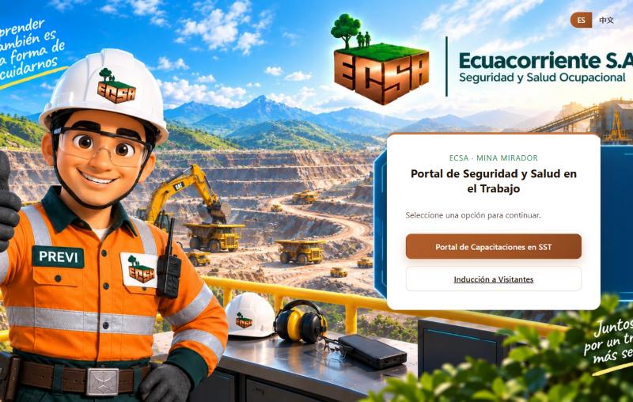
1① Botón para entrar al portal de capacitaciones. La opción «Inducción a Visitantes» es solo para visitas.
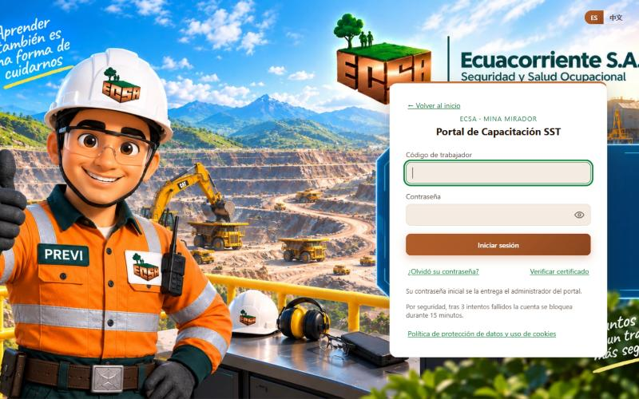
1 2 3 4① Código de trabajador · ② Contraseña (el ojo permite ver lo que escribe) · ③ Iniciar sesión · ④ Idioma
La primera vez que entre, el portal le pedirá, en este orden (verá «Paso 1 de 2» y «Paso 2 de 2»):
En la pantalla de ingreso pulse «¿Olvidó su contraseña?», escriba su código de trabajador y pulse Solicitar clave temporal. El administrador recibirá la solicitud y le entregará una clave temporal; con ella ingresa y el portal le pedirá crear una contraseña nueva.
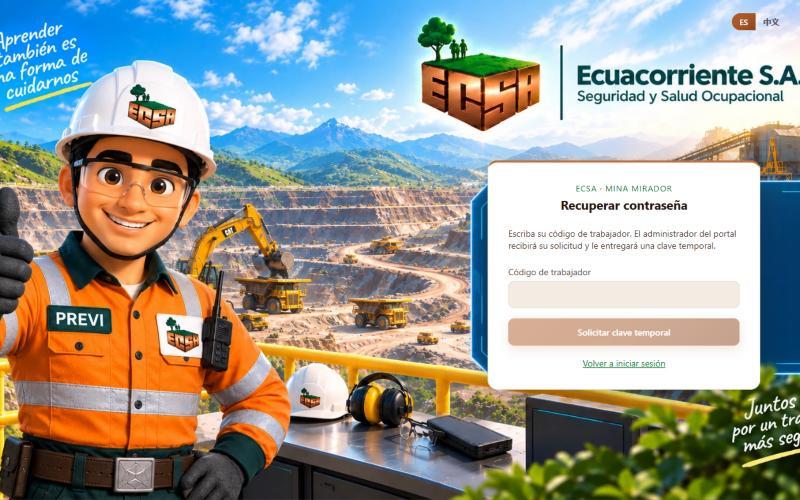
Al ingresar llega a Mi capacitación. Desde aquí ve el estado de todo lo que tiene asignado. 登录后进入“Mi capacitación”（我的培训），可查看所有已分配课程的状态。
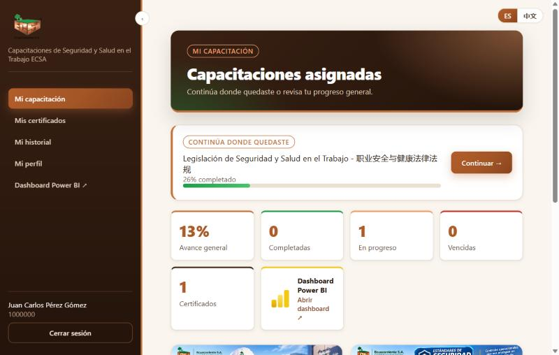
1 2 3 4 5 6Pantalla principal en computador
| # | Qué es |
|---|---|
| 1 | Menú lateral: Mi capacitación, Mis certificados, Mi historial y Mi perfil. |
| 2 | Idioma: cambie entre ES (español) y 中文 (chino) en cualquier momento. |
| 3 | Continuar →: lo lleva directo a donde se quedó la última vez. |
| 4 | Indicadores: avance general, capacitaciones completadas, en progreso, vencidas y certificados. |
| 5 | Dashboard Power BI: solo aparece si el administrador le dio autorización. Abre el tablero en otra pestaña; necesita su cuenta Microsoft de la organización. |
| 6 | Cerrar sesión: al terminar, salga siempre con este botón (más abajo en el menú). |
Más abajo están las tarjetas de cada capacitación, con su estado (Pendiente, En progreso, Completado o Vencido), el número de módulos, la duración y el porcentaje completado.
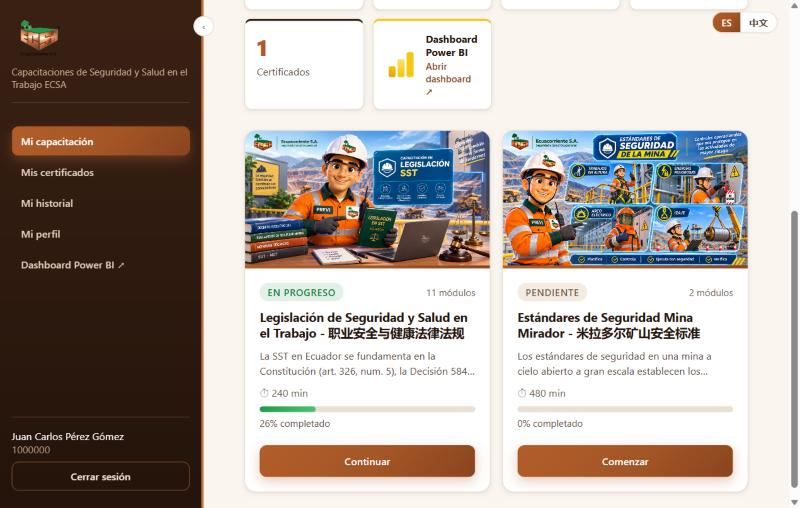
1 2 3 4① Estado · ② Número de módulos · ③ Barra de avance · ④ Botón: «Comenzar» si no ha empezado, «Continuar» si ya inició
Cada capacitación se divide en módulos. Al abrir una capacitación verá una tarjeta por módulo, con sus lecciones completadas y los intentos de evaluación usados.
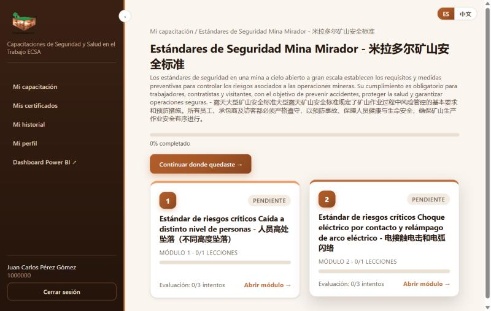
1 2 3 4① Continuar donde quedaste · ② Abrir módulo · ③ Intentos de evaluación usados · ④ Progreso total de la capacitación
Dentro del módulo, a la izquierda está la lista de lecciones y, debajo, la evaluación del módulo. A la derecha se muestra la lección que está estudiando.
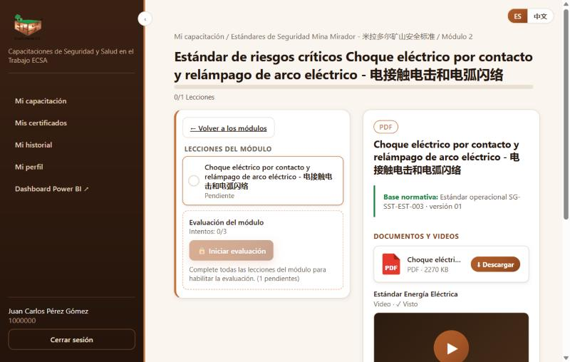
1 2 3 4① Lecciones del módulo (el círculo se marca cuando la completa) · ② Evaluación: aparece en gris hasta terminar todas las lecciones · ③ Documento para descargar · ④ Volver a los módulos
Cada lección puede incluir documentos PDF y videos. Para poder completar la lección debe abrir todos sus documentos y videos. 要完成课程，必须打开该课程的所有 PDF 文件和视频。
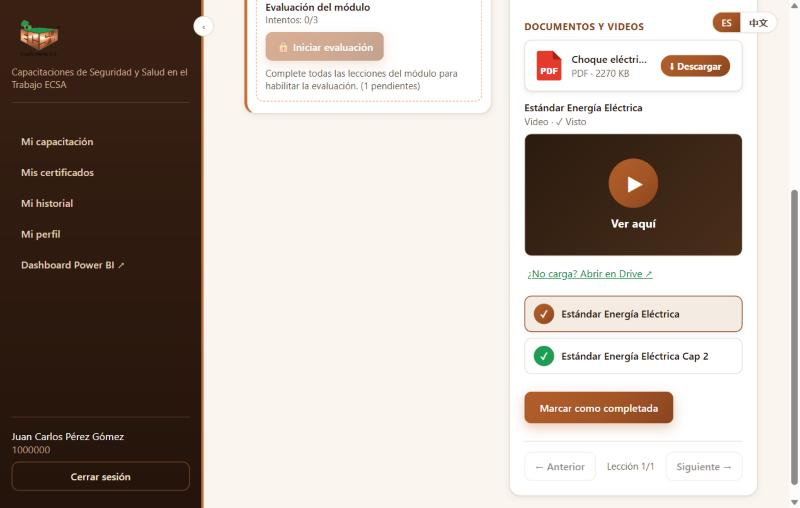
1 2 3 4 5 6Lección con un PDF y dos videos
Al terminar todas las lecciones del módulo aparece el mensaje «¡Terminó las lecciones de este módulo!» y se habilita el botón Iniciar evaluación. Mientras tanto se ve así: 🔒 Iniciar evaluación
Cada módulo termina con una evaluación. Antes de empezar, la pantalla muestra la nota mínima para aprobar, el número de intento (por ejemplo «Intento 1/3») y, si existe, el tiempo límite. 每个模块都有测评。开始前会显示及格分数、当前次数和时间限制（如有）。
| Si… | Entonces… |
|---|---|
| Aprobó | Aparece «¡Aprobado!», se emite su certificado del módulo y puede pulsar Ver mi certificado o Volver al módulo. También se le indica cuál es el siguiente paso. |
| No alcanzó la nota | Se le indica cuántos puntos le faltaron y cuántos intentos restantes le quedan. Repase las lecciones del módulo y pulse Reintentar evaluación. |
| Se le acabaron los intentos | Comuníquese con el administrador del portal. |
Por cada módulo que apruebe recibe un certificado. Los encuentra en el menú Mis certificados. 每通过一个模块即获得一份证书，可在“Mis certificados”中查看。
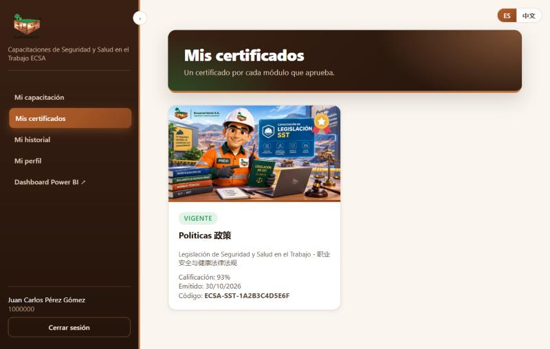
1 2 3① Estado (Vigente) · ② Calificación y fecha de emisión · ③ Código del certificado
Cada certificado tiene un código único (por ejemplo ECSA-SST-XXXXXXXXXXXX). Cualquier persona puede comprobar que es auténtico en la pantalla «Verificar certificado», a la que se llega desde la página de ingreso: escriba el código y pulse Verificar. 每份证书有唯一编码，可在登录页的“Verificar certificado”中输入编码核验真伪。
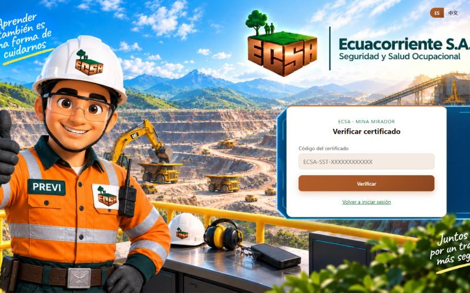
Resume su actividad: lecciones completadas, evaluaciones aprobadas, intentos realizados y tiempo en el portal. Más abajo hay dos tablas: una con sus evaluaciones (fecha, módulo, intento, puntaje y resultado) y otra con las lecciones completadas.
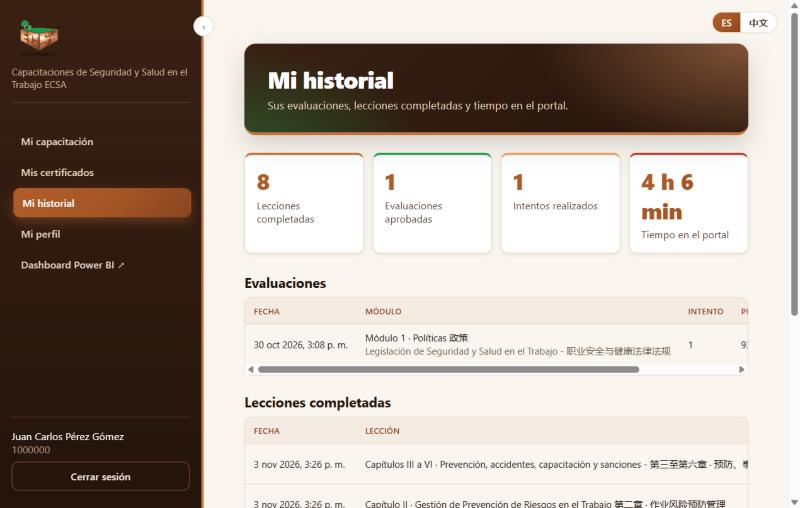
Muestra sus datos (código de trabajador, empresa, área, cargo) y la fecha de su último acceso. Si algún dato está mal, avise al administrador.
Aquí también puede cambiar su contraseña: escriba la actual, la nueva (con los 4 requisitos marcados en ✓) y pulse Actualizar contraseña. Abajo puede volver a leer las políticas que aceptó.
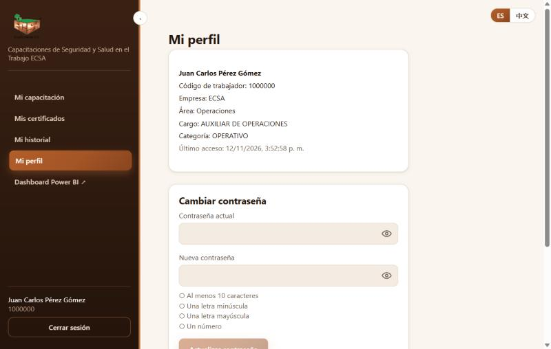
En la esquina superior derecha pulse ES para español o 中文 para chino. El menú, los botones y los mensajes cambian al instante. Los textos propios de cada lección y los videos están en el idioma en que fueron preparados. 点击右上角的 ES / 中文 即可切换，菜单、按钮和提示会立即切换语言。
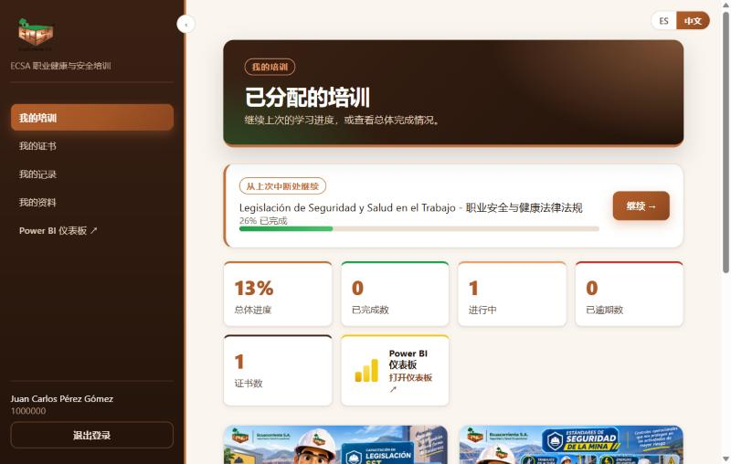
La pantalla principal con el idioma 中文 activado
El portal se adapta a la pantalla del teléfono. El menú lateral se abre con el botón ☰ (arriba a la izquierda). El contenido se muestra en una sola columna y los botones son más grandes. 手机上点击左上角 ☰ 打开菜单，内容为单列显示。
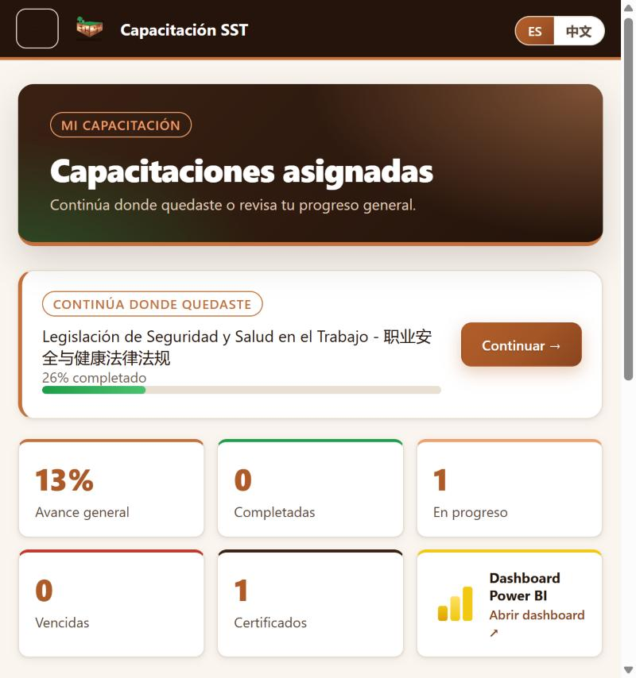
| Qué pasa | Qué hacer |
|---|---|
| No puedo ingresar无法登录 | Revise que su código de trabajador esté bien escrito y que la contraseña respete mayúsculas y minúsculas (use el ojo para verla). Tras 3 errores se bloquea 15 minutos: espere o pida ayuda al administrador. |
| Olvidé mi contraseña忘记密码 | Pulse «¿Olvidó su contraseña?», escriba su código y solicite una clave temporal al administrador. |
| El botón «Marcar como completada» no me deja无法标记课程完成 | Falta abrir algún PDF o video de la lección, o debe esperar unos segundos. Revise cuáles aparecen sin «Visto» y ábralos. |
| «Iniciar evaluación» está en gris测评按钮是灰色 | Aún le faltan lecciones por completar en ese módulo. El mensaje le indica cuántas están pendientes. |
| El video no se ve o se queda cargando视频无法播放 | Pulse «¿No carga? Abrir en Drive ↗». Verifique su internet. Pruebe con otro navegador. Si sigue igual, avise cuál es el video. |
| No me aparecen mis capacitaciones看不到课程 | Recargue la página. Si no están, pida al administrador que verifique su asignación. |
| Se cerró mi sesión sola会话自动退出 | Es por inactividad (10 minutos). Ingrese de nuevo: su avance sigue guardado. |
| Me quedé sin intentos de evaluación测评次数用完 | Comuníquese con el administrador del portal. |
| No veo el botón de Power BI看不到 Power BI | Solo lo ven las personas autorizadas por el administrador. Si debería tenerlo, solicítelo. |
| Algo no se ve o no funciona bien页面显示异常 | Recargue la página (F5, o deslice hacia abajo en el celular). Si sigue, tome una captura de pantalla y envíela como se explica en la última sección. |
Usted forma parte de la prueba piloto. Su experiencia nos ayuda a corregir errores y mejorar antes de usar el portal con todo el personal. 您参与的是试点测试，您的反馈将帮助我们在全面使用前改进平台。
¡Gracias por participar en la prueba piloto! 感谢您参与试点测试！